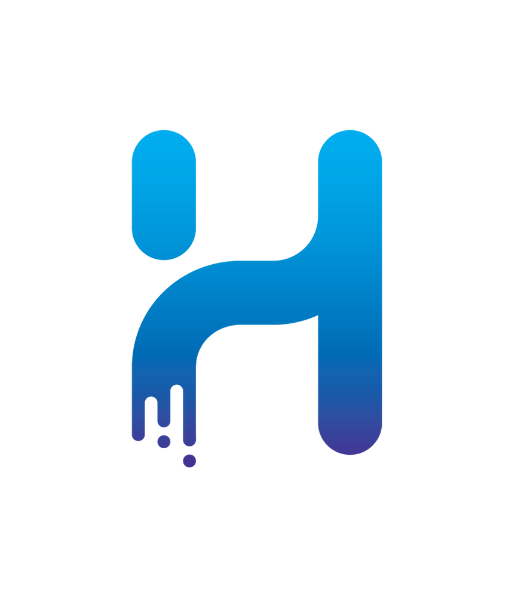

Adobe Animate
O Animate permite criar animações vetoriais. Você pode instalar pela loja oficial e testar gratuitamente.

Toon Boom
O software Harmony permite ao usuário a flexibilidade, fluidez e suavidade da animação tradicional. Não é gratuito.

Blender
Além da modelagem 3D, o Blender permite o usuário trabalhar com a criação de animações em 3D ou 2D. É gratuito.